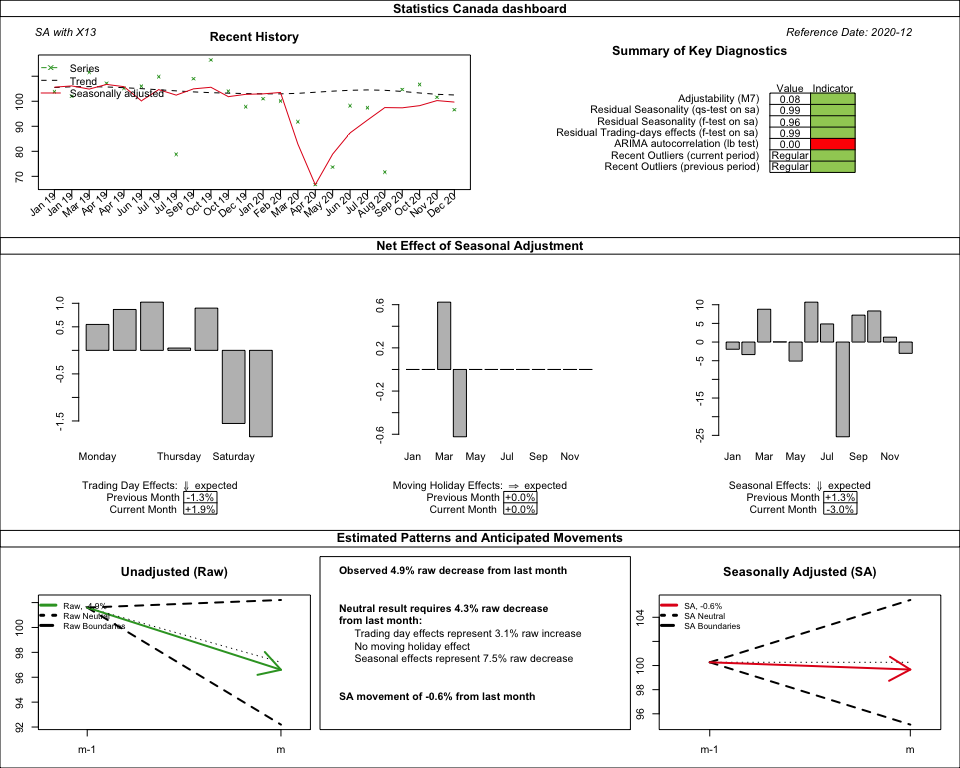
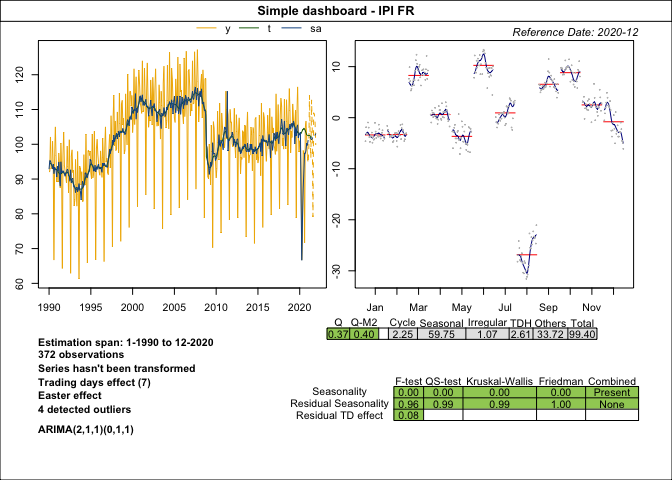
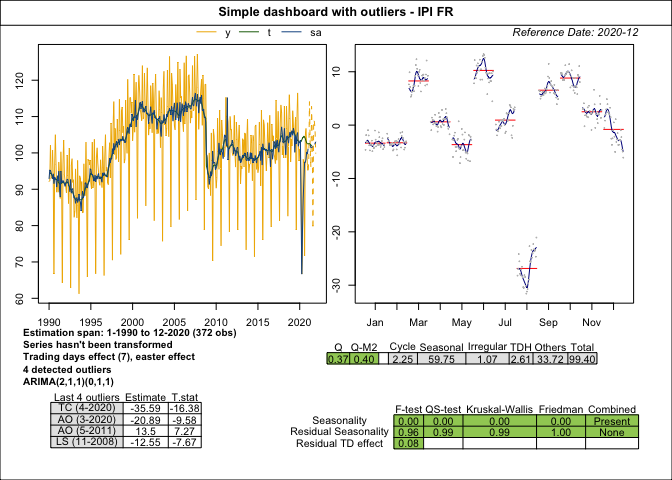

Overview
rjdqa is an extension of the R package RJDemetra, which is an interface to JDemetra+, the seasonal adjustment software officially recommended to the members of the ESS and the European System of Central Banks.
The rjdqa package provides help to the quality assessment by producing different dashboards.
Installation
rjdqa relies on RJDemetra that requires Java SE 8 or later version.
# Install release version from CRAN
install.packages("rjdqa")
# Install development version from GitHub
# install.packages("devtools")
# devtools::install_github("AQLT/rjdqa")
install.packages("rjdqa", repos = c('https://aqlt.r-universe.dev', 'https://cloud.r-project.org'))If you have troubles with the installation of RJDemetra or rjdqa, check the installation manual.
Usage
Create Statistics Canada dashboard
The function sc_dashboard() reproduces Statistics Canada dashboard. See :
KIRCHNER R., LADIRAY D., MAZZI G. L. (2018), “Quality Measures and Reporting for Seasonal Adjustment”, edited by G. L. Mazzi, co-edited by D. Ladiray, European Union, Luxembourg. https://ec.europa.eu/eurostat/web/products-manuals-and-guidelines/-/KS-GQ-18-001
MATTHEWS S. (2016), “Quality Assurance of Seasonal Adjustment for a Large System of Time Series”, 36th International Symposium on Forecasting Santander, Spain.
library(RJDemetra)
library(rjdqa)
sa_model <- x13(ipi_c_eu[, "FR"], "RSA5c")
dashboard_data <- sc_dashboard(sa_model)
plot(dashboard_data, main = "Statistics Canada dashboard",
subtitle = "SA with X13")
Simple dashboard
dashboard_data <- simple_dashboard(sa_model)
plot(dashboard_data, main = "Simple dashboard - IPI FR")
simple_dashboard2() is a slightly variation of simple_dashboard() with smaller description text to include a table with last outliers:
dashboard_data <- simple_dashboard2(sa_model)
plot(dashboard_data, main = "Simple dashboard with outliers - IPI FR")